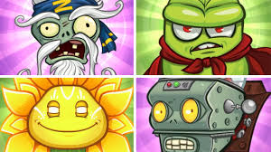
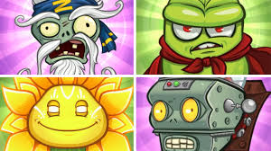
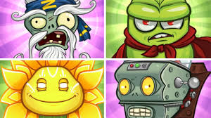

los bosses
 


Los Bosses o Jefes son seres muy poderosos del universo de plantas vs zombis, destacan por su vida y su extraordinario poder el cual es capaz de derrotal al jugador muy facil

Los Bosses o Jefes son seres muy poderosos del universo de plantas vs zombis, destacan por su vida y su extraordinario poder el cual es capaz de derrotal al jugador muy facil